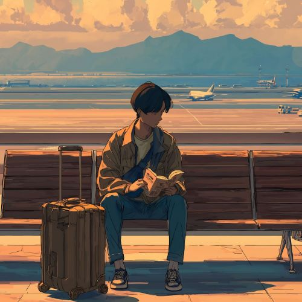
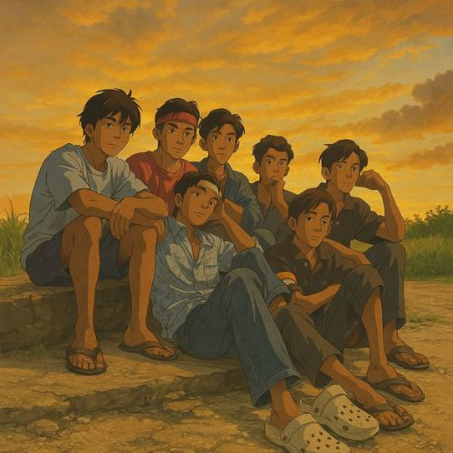

Langkah
Anak Bungsu yang Melangkah Tanpa Tahu Akan Sampai di Mana
Tidak ada peta, tidak ada jaminan, dan tidak ada arahan. Hanya tekad dan doa orang tua yang jadi bekal perjalanan ini.

Rindu
Kehilangan yang Tidak Pernah Benar-benar Selesai Dirasakan
Ada luka yang tidak terlihat tapi selalu terasa. Tentang rindu yang tidak tahu harus dikirim ke mana.

Keluarga
Orang Pertama yang Ada dan Orang Terakhir yang Pergi
Dalam setiap masalah ada yang menguatkan, dalam setiap kebahagiaan ada yang ikut merayakan. Itulah saudara.

Kampus
UIN Suska Riau: Tempat Ilmu dan Iman Tumbuh Bersama
Bukan sekadar tempat kuliah. Di sini karakter dibentuk, wawasan dibuka, dan masa depan mulai dirancang.

Perjalanan
Sahabat Lama: Masih Dekat di Hati, Meski Jarak Sudah Berbeda
Dulu selalu bareng, sekarang masing-masing sibuk dengan jalannya sendiri. Tapi persahabatan itu tidak kemana-mana.

Jurusan
Sistem Informasi UIN Suska Riau: Lebih dari Sekadar Belajar Koding
Di balik logo dan jargon Tindakan Nyata, ada prodi yang membentuk mahasiswa jadi pemecah masalah nyata di dunia digital.